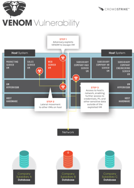

{kind=link}
is (Virtualized Eniroment Negleted Operations Manipulation), lo que
viene a decir, que se ha descubierto una vulnerabilidad que permite
acceder por completo al entorno de ejecución del hipervisor desde una
máquina virtual cualquiera, lo que significa acceder por completo al
entorno de ejecución del resto de máquina virtuales que tiene el Host en
ejecución.
Xen Security Advisory CVE-2015-3456 / XSA-133
version 2
Privilege escalation via emulated floppy disk driveA continuación un ejemplo gráfico que ilustrará en que consiste la
vulnerabilidad, y ayudará para evaluar el nivel de riesgo que tiene tu
organización, si estas afectado por VENOM:
|  |
| Crowdstrike - VENOM vulnerability |
{kind=link}
This vulnerability may allow an attacker to escape from the confines
of an affected virtual machine (VM) guest and potentially obtain
code-execution access to the host.*
Pero **¿Qué sistema de virtualización se
encuentra afectado por dicha vulnerabilidad?**
<span
style=“background-color: rgba(0, 0, 0, 0.0392157); color: #494949; font-family: karlaregular, Helvetica, Arial, sans-serif; font-size: 14px; line-height: 18px;“>The
bug is in QEMU’s virtual Floppy Disk Controller (FDC). This vulnerable
FDC code is used in numerous virtualization platforms and appliances,
notably Xen, KVM, and the native QEMU client.
<span
style=“background-color: rgba(0, 0, 0, 0.0392157); color: #494949; font-family: karlaregular, Helvetica, Arial, sans-serif; font-size: 14px; line-height: 18px;“>
Sabemos **por tanto que no todas VM se
encuentran en riesgo,** sino aquellas que están “running” en
sistema virtuales basado en XEN, KVM y QEMU.
Las máquinas virtuales sobre VMware, Microsoft Hyper-V y <span
style=“background-color: rgba(0, 0, 0, 0.0392157); color: #494949; font-family: karlaregular, Helvetica, Arial, sans-serif; font-size: 14px; line-height: 18px;“> <span
style=“background-color: rgba(0, 0, 0, 0.0392157); color: #494949; font-family: karlaregular, Helvetica, Arial, sans-serif; font-size: 14px; line-height: 18px;“>Bochs<span
style=“background-color: rgba(0, 0, 0, 0.0392157); color: #494949; font-family: karlaregular, Helvetica, Arial, sans-serif; font-size: 14px; line-height: 18px;“>
no se encuentran afectadas por esta vulnerabilidad.
<span
style=“background-color: rgba(0, 0, 0, 0.0392157); color: #494949; font-family: karlaregular, Helvetica, Arial, sans-serif; font-size: 14px; line-height: 18px;“>
<span
style=“background-color: rgba(0, 0, 0, 0.0392157); color: #494949; font-family: karlaregular, Helvetica, Arial, sans-serif; font-size: 14px; line-height: 18px;“>UPDATE:
Si trabajas con KVM, QEMU y XEN Hypervisor, consulta las novedades en
parches y actualizaciones de seguridad, aquí os dejo una muestra:
<span
style=“background-color: rgba(0, 0, 0, 0.0392157); color: #494949; font-family: karlaregular, Helvetica, Arial, sans-serif; font-size: 14px; line-height: 18px;“>
CrowdStrike is aware of the following vendor patches, advisories, and
notifications.
QEMU: [<span
style=“border: 0px; box-sizing: border-box; color: blue; font-family: inherit; font-style: inherit; font-weight: inherit; margin: 0px; outline: 0px; padding: 0px; vertical-align: baseline;“>http://git.qemu.org/?p=qemu.git;a=commitdiff;h=e907746266721f305d67bc0718795fedee2e824c](http://git.qemu.org/?p=qemu.git;a=commitdiff;h=e907746266721f305d67bc0718795fedee2e824c)
Xen Project: [<span
style=“border: 0px; box-sizing: border-box; color: blue; font-family: inherit; font-style: inherit; font-weight: inherit; margin: 0px; outline: 0px; padding: 0px; vertical-align: baseline;“>http://xenbits.xen.org/xsa/advisory-133.html](http://xenbits.xen.org/xsa/advisory-133.html)
Red Hat: [<span
style=“border: 0px; box-sizing: border-box; color: blue; font-family: inherit; font-style: inherit; font-weight: inherit; margin: 0px; outline: 0px; padding: 0px; vertical-align: baseline;“>https://access.redhat.com/articles/1444903](https://access.redhat.com/articles/1444903)
Citrix: [<span
style=“border: 0px; box-sizing: border-box; color: blue; font-family: inherit; font-style: inherit; font-weight: inherit; margin: 0px; outline: 0px; padding: 0px; vertical-align: baseline;“>http://support.citrix.com/article/CTX201078](http://support.citrix.com/article/CTX201078)
FireEye: [<span
style=“border: 0px; box-sizing: border-box; color: blue; font-family: inherit; font-style: inherit; font-weight: inherit; margin: 0px; outline: 0px; padding: 0px; vertical-align: baseline;“>https://www.fireeye.com/content/dam/fireeye-www/support/pdfs/fireeye-venom-vulnerability.pdf](https://www.fireeye.com/content/dam/fireeye-www/support/pdfs/fireeye-venom-vulnerability.pdf)
Linode: [<span
style=“border: 0px; box-sizing: border-box; color: blue; font-family: inherit; font-style: inherit; font-weight: inherit; margin: 0px; outline: 0px; padding: 0px; vertical-align: baseline;“>https://blog.linode.com/2015/05/13/venom-cve-2015-3456-vulnerability-and-linode/](https://blog.linode.com/2015/05/13/venom-cve-2015-3456-vulnerability-and-linode/)
Rackspace: [<span
style=“border: 0px; box-sizing: border-box; color: blue; font-family: inherit; font-style: inherit; font-weight: inherit; margin: 0px; outline: 0px; padding: 0px; vertical-align: baseline;“>https://community.rackspace.com/general/f/53/t/5187](https://community.rackspace.com/general/f/53/t/5187)
Ubuntu: [<span
style=“border: 0px; box-sizing: border-box; color: blue; font-family: inherit; font-style: inherit; font-weight: inherit; margin: 0px; outline: 0px; padding: 0px; vertical-align: baseline;“>http://www.ubuntu.com/usn/usn-2608-1/](http://www.ubuntu.com/usn/usn-2608-1/)
Debian: [<span
style=“border: 0px; box-sizing: border-box; color: blue; font-family: inherit; font-style: inherit; font-weight: inherit; margin: 0px; outline: 0px; padding: 0px; vertical-align: baseline;“>https://security-tracker.debian.org/tracker/CVE-2015-3456](https://security-tracker.debian.org/tracker/CVE-2015-3456)
Suse: [<span
style=“border: 0px; box-sizing: border-box; color: blue; font-family: inherit; font-style: inherit; font-weight: inherit; margin: 0px; outline: 0px; padding: 0px; vertical-align: baseline;“>https://www.suse.com/support/kb/doc.php?id=7016497](https://www.suse.com/support/kb/doc.php?id=7016497)
DigitalOcean: [<span
style=“border: 0px; box-sizing: border-box; color: blue; font-family: inherit; font-style: inherit; font-weight: inherit; margin: 0px; outline: 0px; padding: 0px; vertical-align: baseline;“>https://www.digitalocean.com/company/blog/update-on-CVE-2015-3456/](https://www.digitalocean.com/company/blog/update-on-CVE-2015-3456/)
f5: [<span
style=“border: 0px; box-sizing: border-box; color: blue; font-family: inherit; font-style: inherit; font-weight: inherit; margin: 0px; outline: 0px; padding: 0px; vertical-align: baseline;“>https://support.f5.com/kb/en-us/solutions/public/16000/600/sol16620.html](https://support.f5.com/kb/en-us/solutions/public/16000/600/sol16620.html)
We recommend you reach out to your vendors directly to get the latest
security updates.
¿Qué pasa con QubesOS?
<span
style=“background-color: rgba(0, 0, 0, 0.0392157); color: #494949; font-family: karlaregular, Helvetica, Arial, sans-serif; font-size: 14px; line-height: 18px;“>
Hasta que no salga la versión 3.0 ésta se encuentra desarrollada sobre
un hypervisor XEN, por lo que consulta la [página
oficial](https://www.qubes-os.org/community/) para conocer si esta
disponible el parche.
<span
style=“background-color: rgba(0, 0, 0, 0.0392157); color: #494949; font-family: karlaregular, Helvetica, Arial, sans-serif; font-size: 14px; line-height: 18px;“>
<span
style=“background-color: rgba(0, 0, 0, 0.0392157); color: #494949; font-family: karlaregular, Helvetica, Arial, sans-serif; font-size: 14px; line-height: 18px;“>Referencia: <span
style=“color: #494949; font-family: karlaregular, Helvetica, Arial, sans-serif;“><span
style=“font-size: 14px; line-height: 18px;“>http://venom.crowdstrike.com/
| http://xenbits.xen.org/xsa/advisory-133.html
<span
style=“color: #494949; font-family: karlaregular, Helvetica, Arial, sans-serif;“><span
style=“font-size: 14px; line-height: 18px;“>#ST2Labs -
www.st2labs.com
<span
style=“background-color: rgba(0, 0, 0, 0.0392157); color: #494949; font-family: karlaregular, Helvetica, Arial, sans-serif; font-size: 14px; line-height: 18px;“>